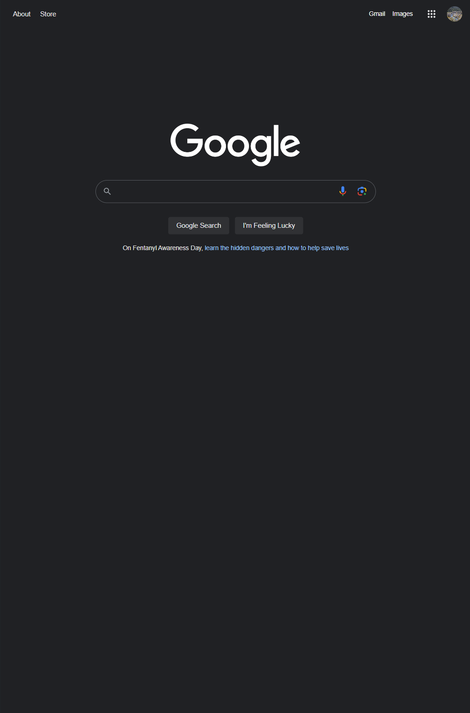

Hick's Law
Google Seach Engine
https://www.google.com/ Hick's Law is about simplification. It says that the more choices there are the longer it will take for people to decide on things. Google's search engine has the minimum information needed to be able to use it. With no extra or distracting buttons or items, Hick's Law is flawlessly executed on this page. It has the necessary search bar and does not bombard the user with anything that would bother them.
PARC: Alignment
Hulu
https://www.hulu.com/welcomePARC: Alignment relates to the relationship of different elements on the page. Each element should be connected to a minimum of one other element, and should not be thrown on the page willy-nilly. Hulu displays this by their cards showing the bunbles they offer. They also maintain consistency in the alignment by keeping all of the main elements centered on the page
White Space & Clean Design
Chanel
https://www.chanel/com/#White space isn't about actual white colored space. It is about maintaining space where nothing exists on the page with a sleak design. Chanel's website is quite simple and uses negative space quite effectively with only their title and menu in the header and a picture in the main body. If you scroll down from this screenshot it also has text that links to the content related to the picture shown.